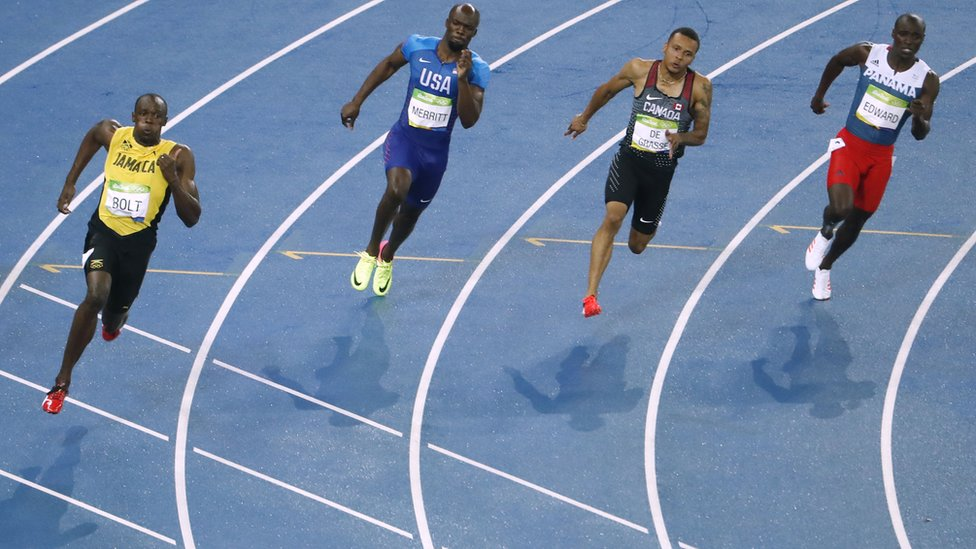

Como preparar la carrera final
En triatlon se corre con fatiga, asi que es util hacer entrenamientos combinados. Un ejemplo facil: 40 minutos de bici y 10 minutos de carrera suave justo despues.
El descanso tambien forma parte del entrenamiento. Dormir bien y respetar un dia de recuperacion hace que rindas mejor y reduce el riesgo de lesion.